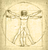
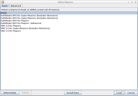
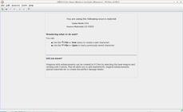
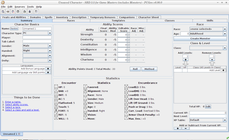
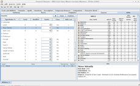
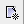
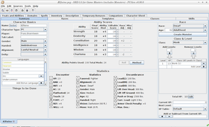

PCGen
Dieser Artikel wurde für die folgenden Ubuntu-Versionen getestet:
Ubuntu 14.04 Trusty Tahr
Zum Verständnis dieses Artikels sind folgende Seiten hilfreich:
 PCGen ist ein Hilfsprogramm für Pen-&-Paper-Rollenspiele, die auf dem D20-System basieren. Es gestattet dem Spielleiter und dem Spieler schnell und unkompliziert Charaktere (auch auf verschiedenen Stufen) für Kampagnen zu erstellen. Für den Spielleiter werden Tools bereitgestellt um eine Kampagne zu verwalten (GMGen-Plugin)
Funktionsumfang¶
PCGen
Erstellen und Verwalten von Charakteren;
Kostenlos und auf allen großen Betriebssystemen lauffähig (Linux, UNIX, Mac OS, Windows);
Daten und Charakter-Dateien sind vom Betriebssystem unabhängig;
Unterstützt Spielsysteme die auf D20 basieren (D&D (3E, 3.5E, 4E), d20 Modern, Pathfinder ... );
Unterstützt viele Verlage und deren Produkte;
Bietet umfangreiche Konfigurationsmöglichkeiten: hinzufügen/entfernen von Rassen-, Klassen-, Talent- (feat) und Hausregeln wie z.B. ungewöhnliche Klassen- oder Rassen- Einschränkungen;
Unterstützt Levelaufstieg mit konfigurierbarer Entwicklung von Talent- (feat), Fertigkeits- (skill) und Attributs- (ability) Boni;
Ausgabe von verschiedensten Charakter- und Gruppenbögen im html-, txt- und pdf-Format.
GMGen
Kampfverwaltung für z.B. Schaden, Zaubersprüche und Angriffswürfe;
Die Kampfverwaltung kann alle Werte der teilnehmenden Charaktere und Monster anzeigen;
Hinzufügen von Erfahrungspunkten basierend auf den besiegten Gegnern, dem Herausforderungsgrad und der Gruppenstufe;
Erstellen von Begegnungen incl. Generierung von Gegnern;
Notizen, um eine Kampagne zu verwalten;
Generator, zum Erstellen zufälliger Namen für Personen/Orte/Dinge;
Rechner, um die Reisezeit mit verschiedenen Transportmöglichkeiten und die Kosten für Übernachtungen zu berechnen.
Erstellung eines "Würfelbechers" mit verschiedensten Konfigurationsmöglichkeiten (z. B. 1d6-2d4+3)
Installation¶
Hinweis!
Fremdsoftware kann das System gefährden.
Zunächst von der Projektseite  die aktuelle Version des Programms (pcgenVERSIONSNUMMER_full.zip) herunterladen, entpacken [1] und den Inhalt nach ~/.pcgen im Homeverzeichnis verschieben.
die aktuelle Version des Programms (pcgenVERSIONSNUMMER_full.zip) herunterladen, entpacken [1] und den Inhalt nach ~/.pcgen im Homeverzeichnis verschieben.
Danach in einem Editor [2] die Datei pcgen.sh mit folgendem Inhalt erstellen:
Für 64-bit-Systeme mit OpenJDK 7¶
1 2 3 | #!/bin/bash cd ~/.pcgen/ /usr/lib/jvm/java-7-openjdk-amd64/jre/bin/java -jar pcgen.jar |
Hinweis:
Für 32bit Systeme oder andere openJDK-Versionen muss der Teil java-7-openjdk-amd64 des vollen Pfads /usr/lib/jvm/java-7-openjdk-amd64/jre/bin/java -jar pcgen.jar entsprechend angepasst werden.
Den richtigen Teil bekommt man z.B. über den Befehl
update-alternatives --list java #Anzeigen des Dateipfades der aktuellen Java-Version
Die Datei anschließend nach ~/bin im Homeverzeichnis verschieben - dieser Pfad muss ggf. noch angelegt werden - und ausführbar [4] machen. Das Programm kann nun über den Befehl pcgen.sh gestartet werden [5]. Auf Wunsch kann ein Menüeintrag [6] vorgenommen werden.
Benutzung¶
Eine detaillierte Anleitung zu PCGen und der Komponente GMGen findet man hier:
|  |
| Fenster zur Quellenauswahl |
|  |
| Programm mit geladenen Quellen |
|  |
| Summary-Tab eines neuen Charakters |
|  |
| Fertigkeiten-Tab |
Nach dem Öffnen des Programms erscheint das Fenster zur Auswahl der Quellen. Hier die gewünschte Quelle auswählen und mit Klick auf Load bestätigen.
Nachdem die Quellen geladen sind erscheint der Startbildschirm. Hier kann man nun über  oder "File -> New" einen neuen Charakter erstellen. Im Fenster des neuen Charakters ist links unten eine To-Do-Liste.
Das Programm lässt nur Eingaben zu, die den geladenen Regelwerken entsprechen, falsche Eintragungen werden ignoriert/können nicht erfolgen. Abweichungen hierzu können in den Einstellungen eingetragen werden.
Durch einen Klick auf einen Eintrag in der To-Do-Liste gelangt man automatisch zur entsprechenden Eingabemaske, das Tab "Summary" führt wieder zurück zur Übersicht:
Links oben Namen des Charakters eintragen (hierbei können auch gleich die anderen beschreibenden Eigenschaften (wie z.B. Spieler, Geschlecht, Gesinnung ...) ausgefüllt werden;
In der Mitte des Fensters die gewürfelten Attribute ("ability scores") eintragen (Attributsveränderungen durch Rasse/Klasse werden später vom Programm automatisch vorgenommen);
Rechts oben die Rasse festlegen;
Links in der Mitte die Bonussprachen festlegen;
Rechts unterhalb der Rasse die Klasse festlegen. Hierzu einfach die Klasse auswählen und "Add Levels" klicken. Im folgenden Fenster die ausgewürfelten Trefferpunkte eintragen;
Fertigkeitspunkte ("skill points") verteilen. Dies wird in einem eigenen Tab mit Namen "skills" vorgenommen. Hier einfach in der linken Spalte mit + und - die Ränge in den einzelnen Fertigkeiten festlegen. In der rechten Spalte kann man die fertigen Werte ablesen:
Auswahl der Talente ("feats") im "Feats and Abilities"-Tab. Hier einfach links das Talent auswählen und auf "Add selected" klicken;
Je nach Klasse und Rasse können nun noch andere Punkte zur Auswahl stehen.
Eine Eingabe von Gottheiten ist nicht möglich, da die Daten der Götter nicht in der RSRD zu finden sind. Bei Klerikern muss man für die entsprechenden Domänen selber Hand anlegen oder die Götter von Hand erstellen.
Nun ist der Charakter fertig erstellt.

Stufenaufstieg:¶
Um den Charakter eine Stufe aufsteigen zu lassen einfach im "Summary" Tab rechts die Klasse auswählen und auf "Add Level" klicken, die ausgewürfelten Trefferpunkte eintragen. Anschließend erscheinen in der To-Do-Liste weitere Einstellungen die noch vorgenommen werden müssen (Fertigkeitspunkte etc.).
Konfiguration¶
Über "Settings -> Preferences" oder  gelangt man zu den Einstellungen.
gelangt man zu den Einstellungen.
| Menüpunkt | Beschreibung |
Character | Einstellungen vornehmen, welche sich auf den Charakter auswirken, z.B. Hitpoints. |
Appearance | Das Aussehen des Programms verändern. |
PCGen | Programmeinstellungen verändern, z.B. den Browser. |
Plugins | Erweiterungen verwalten / (ent)laden. |
Deinstallation¶
Um das Programm zu entfernen, sind folgende Schritte notwendig [3]:
rm -dr ~/.pcgen #löscht den Ordner sowie dessen Inhalt rm ~/bin/pcgen.sh #löscht den Link

Infobox¶
| PCGen | |
| Originaltitel: | PCGen :: An RPG Character Generator |
| Genre: | Pen & Paper Rollenspiel (D20)-Tool |
| Sprache: | ,  ; Teilweise: ; Teilweise:  , ,  , ,  , ,  |
| Veröffentlichung: | 2003 |
| Publisher: | PCGen-Team |
| Developer: | Bryan McRoberts et al. |
| Systemvoraussetzungen: | 1 GHz (empfohlen: 2 Ghz+) / 256 MB RAM (empfohlen: 1-2 GB) / 200 MB Festplattenspeicher / Java (OpenJDK oder Sun Java) / pdf-Viewer um die Charakterbögen anzusehen oder auszudrucken |
| Medien: | Download |
| Strichcode / EAN / GTIN: | - |
| Läuft mit: | nativ |
- Erstellt mit Inyoka
-
 2004 – 2017 ubuntuusers.de • Einige Rechte vorbehalten
2004 – 2017 ubuntuusers.de • Einige Rechte vorbehalten
Lizenz • Kontakt • Datenschutz • Impressum • Serverstatus -
Serverhousing gespendet von